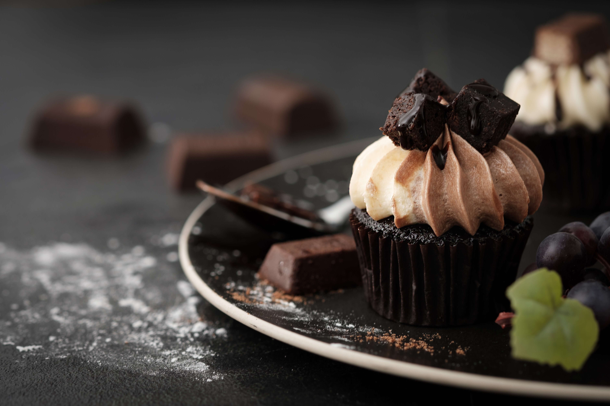

RECETAS
Muffins de chocolate


by Ana Maria Zamorano
INGREDIENTES
- 300 gr. harina de trigo
- 80 gr. cacao puro, sin azúcar
- 1 y ½ cdita. levadura química
- ¼ cdita. sal
- 250 gr. azúcar
- 100 gr. mantequilla
- 250 ml. leche entera
- El zumo de ½ limón
- 2 huevos
- 150 gr. chocolate 70% cacao
PREPARACION
- Por un lado mezclamos los ingredientes sólidos, la harina, el cacao, la levadura y la sal. Reservamos. En un cuenco mezclamos la leche entera con el zumo de medio limón. Dejamos reposar durante 15 minutos, así conseguiremos un buttermilk casero.
- Derretimos la mantequilla en el microondas y la reservamos. En un bol batimos los huevos con el azúcar. Mezclamos bien hasta crear una crema espumosa. Añadimos la mantequilla derretida y el buttermilk. Mezclamos bien.
- Incorporamos los ingredientes secos y, con unas varillas mezclamos hasta integrar. No es necesario que trabajemos demasiado la mezcla, se trata sólo de integrar los sólidos con los líquidos.
- Con un cuchillo troceamos el chocolate 70% cacao en daditos pequeños. No importa que nos queden irregulares o de diferentes tamaños. Apartamos ¼ del chocolate y el resto lo añadimos a la masa de los muffins. Removemos para repartirlos por toda la masa.
- Encendemos el horno para precalentarlo a 190º C y mientras rellenamos las cápsulas con la mezcla, dejando siempre 1/3 de la altura libre.
- Tenemos que tener en cuenta que la masa subirá por eso es necesario que dejemos un espacio libre, sin rellenar.
- Repartimos el chocolate troceado que tenemos apartado sobre todos los muffins y horneamos durante 20 minutos a 190ºC con calor por arriba y por abajo y sin ventilador.
- Repartimos el chocolate troceado que tenemos apartado sobre todos los muffins y horneamos durante 20 minutos a 190ºC con calor por arriba y por abajo y sin ventilador.
- Lo perfecto es que los tomemos recién hechos. Una vez que estén templados, los trocitos de chocolate estarán fundidos en cada bocado. Imaginad estos muffins acompañando a un vaso de leche puede ser una merienda o un desayuno de rechupete.